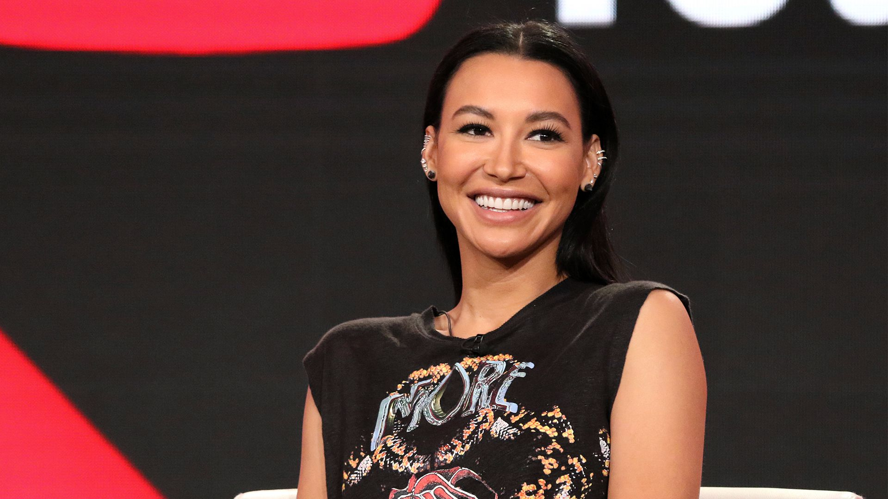

Naya Marie Rivera
The woman who helped queer women

Naya Rivera in her movie press conference
- 1987 - born in Valencia, California
- 1991 - acting debut in sitcom The Royal Family
- 2005 - graduated in Valencia High School
- 2008 - began studying and graduaten in New York Film Academy
- 2009 - casted as Santana Lopez in television show Glee
- 2010
- won Favorite Soundtrack Album in American Music Awards
- won Favorite Music Duo or Group and Best Ensemble TV Cast in Gay People's Choice Awards
- won Outstanding Performance by an Ensemble in a Comedy Series in Screen Actors Guild Awards
- won Future Classics in TV Land Awards
- 2011
- won her first ALMA Award as favorite Female Music Artist
- won Best Comedy Supporting Actress in Gold Derby TV Awards
- included in HitFix's 25 Breakout Stars of 2011
- included in TV Guide's Best Performances of 2011
- included in MTV's Best TV characters of 2011
- signed a deal under Columbia Records
- 2012
- won Favorite TV Actress - Leading Role in a Comedy Series in ALMA Awards
- won Female Music Artist in ALMA Awards
- won Best Comedy Supporting Actress in Gold Derby TV Awards
- won Cause You're Hot in NewNowNext Awards
- 2013
- won Giffoni Experience Award in Giffoni Film Festival
- released her debut single Sorry
- 2014
- debuted in the big screen with feature film At The Devil's Door
- won Favorite TV Gal Pals in People's Choice Awards
- 2016 - published a memoir, Sorry Not Sorry: Dreams, Mistakes, and Growing Up
- 2018 - won Television Season (featuring women in key roles) in The ReFrame Stamp
- 2020
- her character Santana appeared on the Thrillist list of the 100 Greatest Tv Characters of the 21st Century
- died at the age of 33
REPRESENTATION AND LEGACY
- GLAAD President - said that her portrayal of Santana Lopez was
one that hasn't been told on prime-time network television show at the level, particularly by an LGBT teen of color
.
- Isabel Molina-Guzman, professor at University of Illinois - added that Naya Rivera played the first lesbian Latina on primetime television and thus was honored for her compassionate and complex representation.
- NBC - Naya Rivera
redefined queer and Afro-Latino representation on TV
.
- Lionsgate - wrote that
her remarkable contributions to our industry created a lasting memory
.
- Digital Spy - said that
Naya Rivera's impact was nothing short of groundbreaking
.
- NME - called her
trailblazer who leaves behind a powerful legacy
.
- Erika Abad, professor at University of Nevada - wrote that
Naya Rivera's characters provided solidarity and visibility, her career and diverse roles showcased the demand to support and build upon Afro-Latinx storylines
.
- Esquire - wrote
in such a short time, Rivera managed to shape a landscape and be part of a measurable change
.
- BBC - looked at the impact of Rivera's role as Santana Lopez in providing important representation, internationally, for young queer women and the idea of being out.
- Steven Canals, Entertainment Weekly
Naya shattered the tropes and gifted the audience with a complex, queer, Black Puerto Rican woman
.- wrote that he will
never be able to articulate the importance of seeing Naya Rivera, a Black Puerto Rican, portraying a queer Afro-Latina on prime-time TV
.
- Dana Piccoli, NBC -
I don't use the word legacy lightly, but Rivera and her beloved Glee character, Santana Lopez, helped change queer television history
- Whembley Sewell, Emmy Award-winning editor-in-chief - said that
what LGBTQ people of color are going to create and put into the world because Rivera gave us what she did is going to be so, so incredible
.
- Autostraddle - replaced its Best Coming Out Story award with Santana Lopez Legacy Award For Outstanding Queer Teen Character
PHILANTHROPY AND ADVOCACY
- Notably supported various charities, particularly for LGBTQ+ community and immigrants.
- Dedicated her time to organizations including GLAAD, Stand Up to Cancer, The Trevor Project, The Elephant Project, The Sunshine Foundation, I Am an Immigrant, Alliance of Moms, Point Foundation, the Thirst Project, FEED, Los Angeles Mission, Get Schooled, and Kindred Foundation. Her favorite charity was Alexandria House, a women's shelter in Los Angeles.
- Championed LGBTQ+ rights off-screen. She wrote for Billboard, "love Letter to the LGBTQ Community"
If you have time, you should read more about this incredible human being on her Wikipedia entry